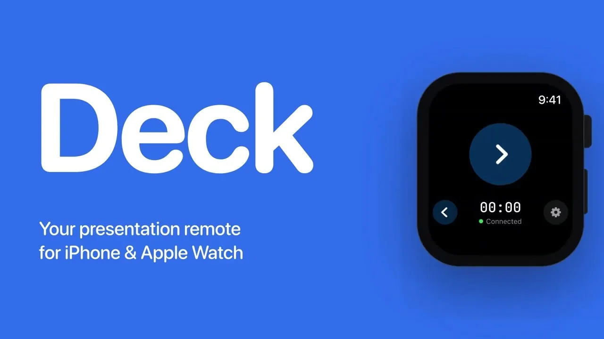
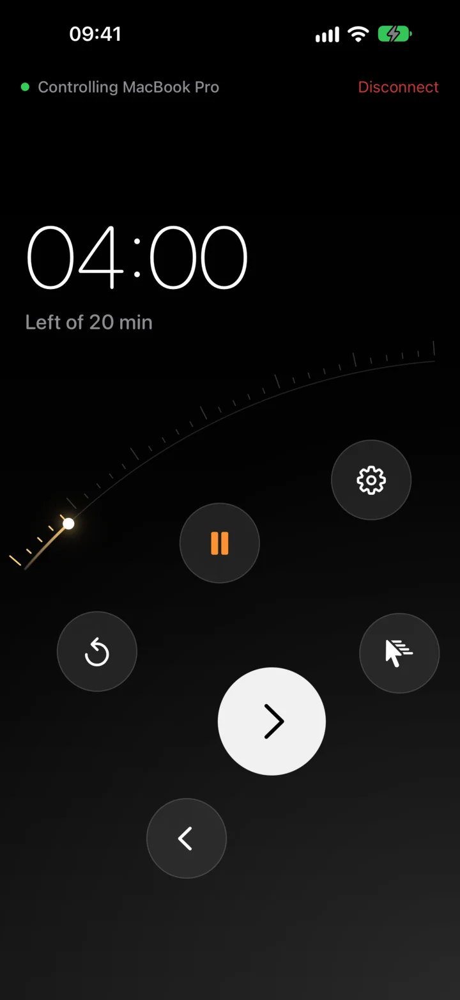
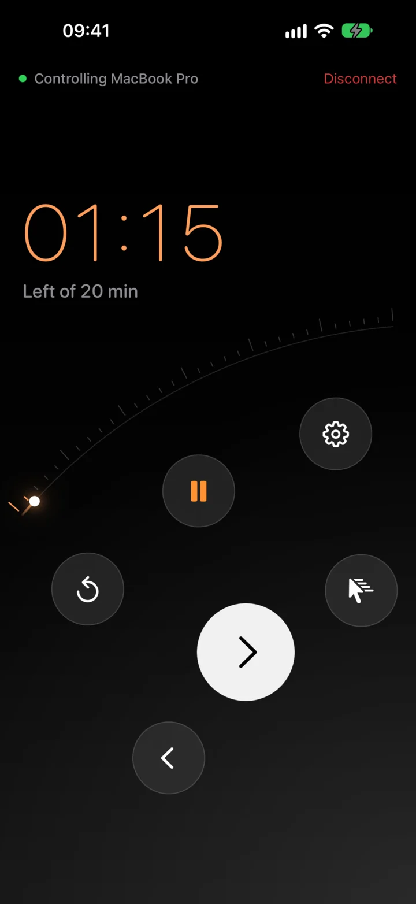
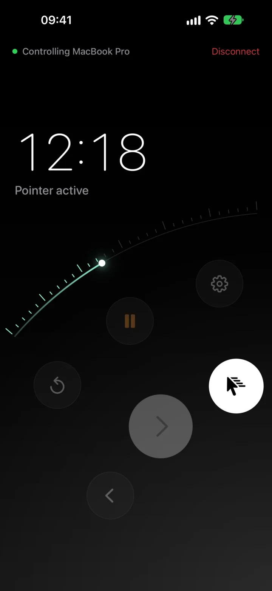
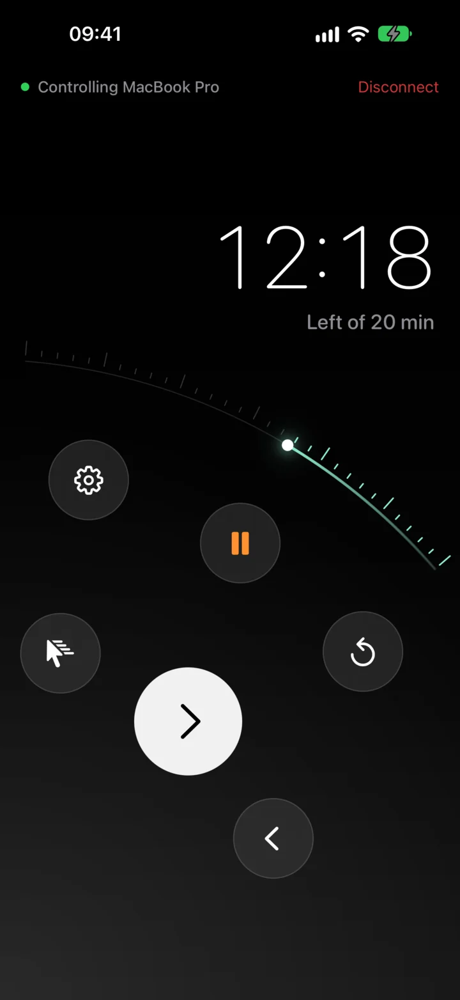
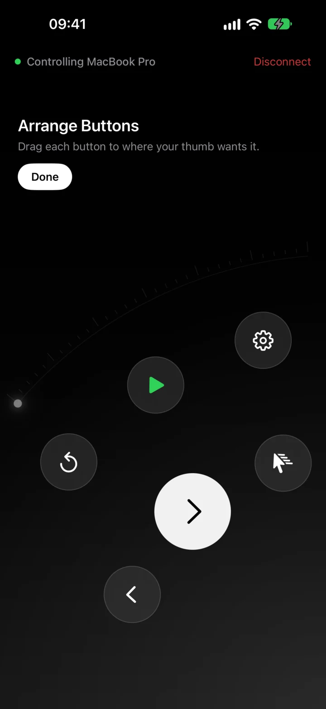
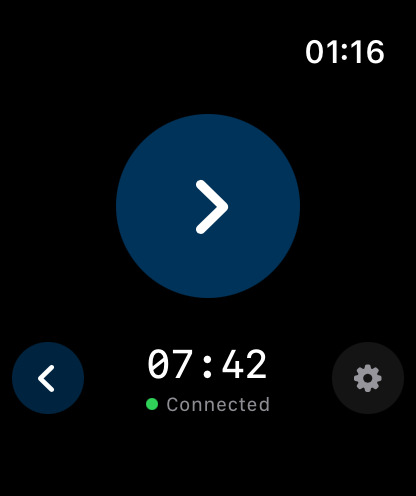

Watch it
run a talk.
Thirty seconds. Every slide change in the film comes from a real tap, double tap or wrist flick.

Play the Deck film, 30 secondsBuilt for
one thumb.
Every control sits on the arc your thumb already makes, so your eyes stay on the room.

Finish
on time.
Slide the arc to set your limit. Your iPhone buzzes at halftime and when time’s up.
The countdown also shows on your Lock Screen and in the Dynamic Island.

Point like
a laser.
Hold the pointer button and aim your iPhone. Spotlight dims everything but your point.
- Hold to aim.
- Tap to click.
Try it here: move across the slide.

Move any
button.
Touch and hold, then drag each control to where your thumb wants it. Left-handed? Flip the layout.


Or use
your wrist.
Double tap your fingers, flick your wrist or turn the Digital Crown to change slides from Apple Watch.
Double tap needs Apple Watch Series 9 or later, or Ultra 2.

Two installs,
then present.
-
Install Deck on your Mac
It sits in the menu bar and presses the arrow keys for you. Allow Accessibility the first time it asks.
brew tap douinc/tap brew install --cask deckNo Homebrew? Download the DMG. If Homebrew calls the tap untrusted, run
brew trust douinc/taponce. -
Install Deck on your iPhone
The Apple Watch app comes with it.
Download on the App Store7-day free trial, then $19.99 a year.
-
Open both and tap your Mac
Your iPhone finds the Mac on the same Wi‑Fi. Deck then drives whatever app is in front: Keynote, PowerPoint, Google Slides, Figma.
Needs macOS 14, iOS 18 and watchOS 10 or later.
Mac not showing up? Get help.
No dongle.
No account.
No cloud.
Deck connects your iPhone straight to your Mac over your own Wi‑Fi. It works with no internet at all.